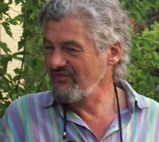

Lorne Beug is a Canadian mixed media artist born in 1948, in Regina, Saskatchewan. He graduated from the University of Regina in 1976 after studying fine arts, after he earned his BA in both Anthropology and Psychology in 1969. Lorne's works explore time in relation to regional landscape and culture.

